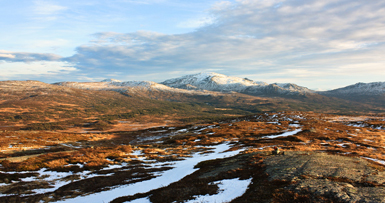

Etappe 6: Hegra - Gressli
Mandag 10. November 2008 av: Montarou

Oktober har blitt til november. Enda en måned har passert og gjort sinnet rikere og midjen smalere. Jeg har på meg jeans for første gang på veldig lenge. Det er god plass. Vi har blitt nødt til å flytte prosjektet sørover som tidligere antatt. Det er i og for seg ikke noe problem. Jarle og Andreas er med på denne etappen. Vi går fra Hegra i Nord-Trøndelag til Gressli i Sør-Trøndelag. Jeg hadde egentlig ingen forventninger til naturen på denne etappen og ble veldig positivt overrasket! Skikkelig nydelig område - ikke minst på vinterføre. Litt myrete er det, men furuklyngene og grantrærne ligger pent spredt utover. Det føles godt å gå i skogen igjen. Ly, varme og masse ved. Skikkelig godt er det. Og været slår til! Med unntak av den første dagen får vi godvær og opphold stort sett hele tiden.
Vi kommer oss omsider ut på mandagen. Mange ærend står på agendaen før avgang. Men vi vet hva vi trenger. Med målrettet blikk plukker vi med oss tørrvarer fra butikkhyllene. Atten gode porsjonspakninger med frokostmix blandes med stød hånd og desilitermål på gulvet i Øvre Allé i Trondheim.
Første kvelden er våt, men furustubbene brenner godt uansett. Boligen består av to lette presenninger denne kvelden. Vi inntar soveposene mens bålet fortsatt kaster et blafrende lys på underiden av presenningen. Vi sovner. Vi våkner. Det blåser og regner. Vi sovner igjen og våkner igjen av regnet mot ansiktet som kommer flyvende inn under den tynne glassfiberduken. Jeg våkner av lyden av dryppende vann som treffer soveposen til Andreas i fotenden. Sovner igjen. Til slutt avslører lyset en ny dag med potensiale til finvær! Da er vi godt i gang med å pakke. Vi har nemlig et godt stykke å gå denne dagen. I tillegg er det første ordentlige gådag, det vil si at vi somler mer enn vanlig. Vi når Kvitfjellhytta mens mørket gradvis sluker den. Ikke lenge etter er det fyr i ovnen og varme i hender og føtter. Det er stjerneklart og jeg sovner i det hodet treffer puten.
Nest siste dag blåser det. Mer enn hva presenningen kan skjerme oss fra. Vi slipper oss ned i dalen og leter etter en egnet leirplass der trærne står tettest. Det finner vi og 40 minutter brenner bålet godt foran en presenning slått opp etter alle kunstens regler. Ved siden av ligger ved nok til å holde varmen hele kvelden. Øverst i tretoppene river vinden, men ti-tolv meter nedenfor sitter vi lunt og nyter kakao, nøtter og dagens Drytechpose.
Tjuefire timer senere er vi i byen. Byens sus fyller igjen øregangene akkompagnert av ringende mobiler, tutende biler og musikk fra byens mange høyttalere. Vi trenger ikke se på kart i kveld. Vi skal ikke gå i morgen og ikke dagen etter det heller. Kroppen har gått på autopilot lenge, men nå er det slutt for denne gang. Den siste leiren på høstetappen er slått og brutt. Nå venter bomullsklærne, kø på RIMI, kø på E6, varme morgendusjer, vannklosett, rene sokker, overflod av mat, en variert meny, en myk seng og alt som hører sivilisasjonen til. Det blir rart. Det blir deilig. Vi får se hvor lang tid det tar før jeg igjen sovner under en klar stjernehimmel med frostrøyken stående ut av den lille åpningen øverst i soveposen...
<< Tilbake til Reisebrev